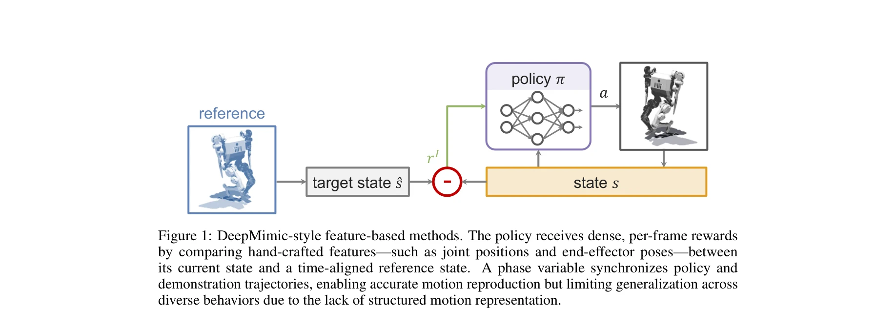

저자: Chenhao Li, Marco Hutter, Andreas Krause | 날짜: 2025-07-08 | URL: https://arxiv.org/abs/2507.05906

Figure 1: DeepMimic-style feature-based methods. The policy receives dense, per-frame rewards
Feature-based와 GAN-based 학습 방법론을 비교 분석하여, 각 접근법의 장단점을 명확히 하고 작업별 우선순위에 따른 방법 선택 프레임워크를 제시한다.
Figure 1: DeepMimic-style feature-based methods. The policy receives dense, per-frame rewards
총평: 이 survey는 시연 학습의 두 주요 패러다임을 원칙적으로 비교하고, 실무자들이 작업 특성에 맞는 방법을 선택할 수 있도록 하는 개념적 프레임워크를 제공하는 가치 있는 기여이다. 구조화된 모션 표현의 수렴점을 강조함으로써 향후 연구의 방향성을 제시한다.